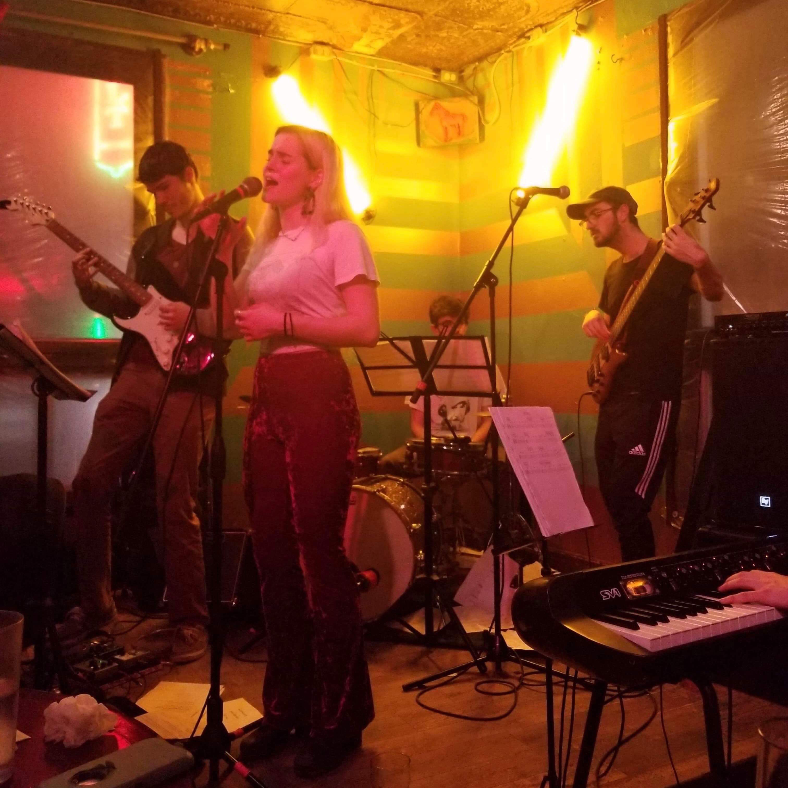

I'm an undergraduate student at McGill University in my 4th year studying jazz voice and music technology. I'm also currently an audio engineering intern at Wicked Squid Studios in Rochester, NY. I write and perform my own compositions under the name Lucy's Mirror. I like jazz a lot but I'm also interested in R&B and hip hop.
My classes this term: Jewish Life in the Islamic World Feminist and Social Justice Studies Music and the Internet Musice Since 1945 The German Lied